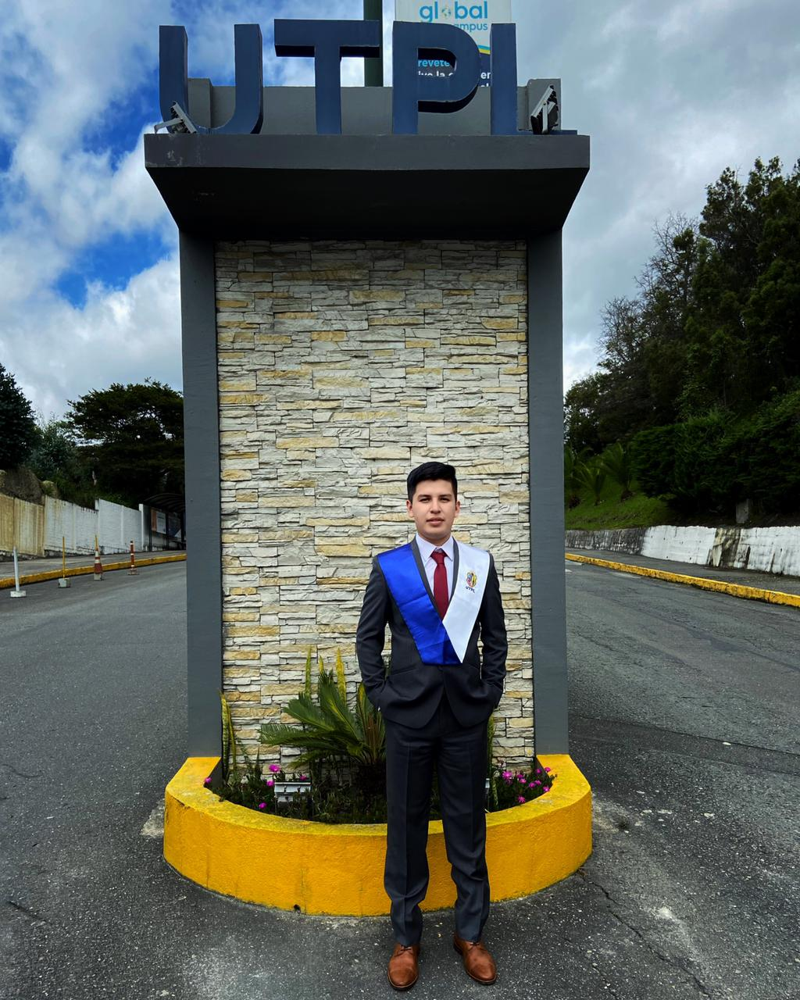
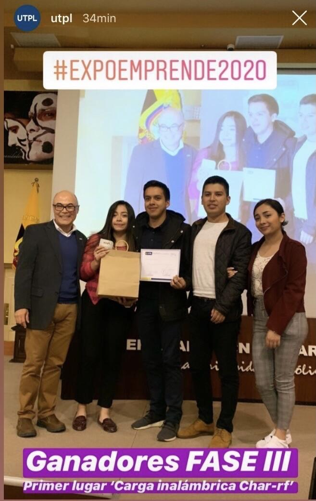

Angel Yasmani Viñamagua Cuenca
Ingeniero en Electrónica y Telecomunicaciones
Actualmente me encuentro estudiando desarrollo web y mobile para posterior, enfocarlo en un proyecto personal que beneficiará a miles de comerciantes ecuatorianos
y los dará a conocer en todo el mundo 🌎.
Me apasiona innovar, aprender como funciona algo y volverlo más eficiente, que sea autónomo y en general que facilite la vida a las personas 🙋♂️.
El descubrir como mejorar algo
mediante el uso del internet, software y hardware (IoT) 💻 tiene el mismo efecto en mi que el café en algunas personas. Puedo trasnochar y seguir con mucha energía pues es algo que en verdad me apasiona.
🎓 Para mis docentes
otro dios más 😂 para el resto de personas, Ingeniero en Electrónica y Telecomunicaciones por la Universidad Técnica Particular de Loja.
👉 La industria 4.0, está a la vuelta de la esquina y es ahí cuando más me alegro de haber
estudiado mi ingeniería pues la automatización mediante el uso de las TICs, IoT, WSN, redes y protocolos de comunicación es una necesidad. Durante mi vida universitaria, trabajé en algunos proyectos con WSN, energía renovable y
redes. Finalmente para mi trabajo de titulación, quise mejorar mi ciudad y desarrolle una propuesta de automatización del Sistema Municipal de Estacionamiento Rotativo Tarifado utilizando LoRaWAN.
👉 Programador de nacimiento, creyente de que el mundo dio un enorme paso hacia la digitalización (e-commerce, cripto-moneda, home office...). Aprendo a desarrollar
software ya sean apps, webs o controladores de equipos 👩💻. Manejo c++, flutter, php, python, css, Matlab, java, WordPress, ATMEL Studio, LabVIEW y más, siempre en busca de poder automatizar lo que necesites en tu compañía, empresa
o startup. Y deseoso de compartir mis conocimientos.
👉 Dado que siempre me ha gustado el imaginar y llevar a cabo proyectos, he participado en algunos concurso de innovación siendo finalista en "Imagina Banco del Pacífico" y ganador junto a mi team, en un reto de innovación
de la UTPL.
👉 Diseñador empírico con la capacidad de diseñar una línea gráfica para web, app, e-commerce, e-mail marketing y marca personal. Me pongo en el lugar del público objetivo, satisfaciendo sus necesidades y solucionando
sus problemas.